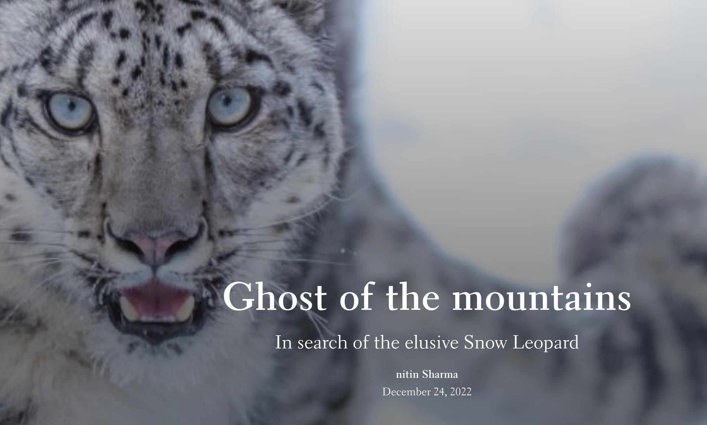
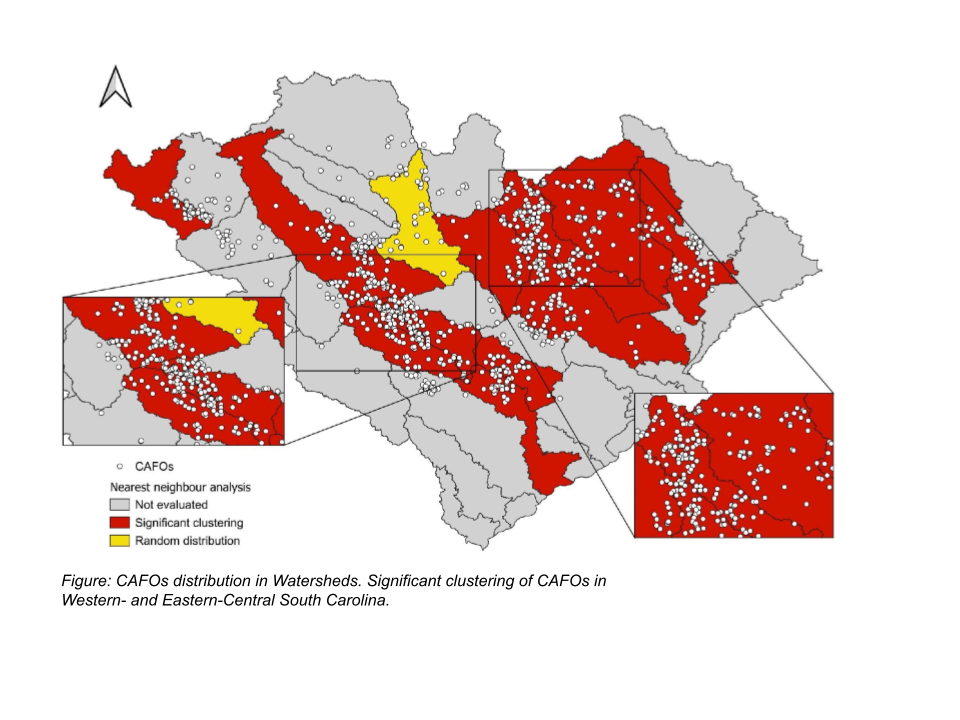
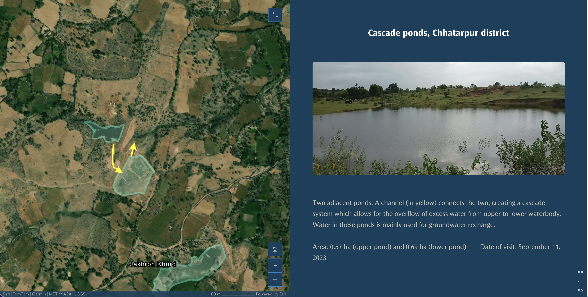

Nitin Sharma
About Me
I am a geospatial and policy analyst with sector experience in water management, climate risks, and agriculture. I have 3 years of total experience applying python and GIS skills in multiple projects- I have worked with Indian Institute of Technology, Delhi (Public policy) and International water management institute in consultant roles. I see my role as an anchor between technical skills and policy issues.
I am currently seeking opportunities in research roles and PhD positions with focus on applying geospatial analysis to water-climate-agriculture domains.
Projects
A selection of my geospatial projects. Click any card to see the full write-up.

StoryMaps contest winner, 2022
An ArcGIS StoryMap exploring the snow leopard — a mystical, elusive predator inhabiting the high-altitude regions of Northern and Central Asia across 12 countries — combining cartography, imagery, and narrative to raise awareness about the species and its habitat.
ArcGIS StoryMaps ArcGIS Online

Digitized and mapped Animal Feeding Operations (AFOs) across two states in the US, combined data extraction from databases and ground-truthing using ArcGIS Pro and QGIS workflows.
QGIS ArcGIS Python ArcPy

Water storage analysis- Bundelkhand
Assessed the impact of the 2023 monsoon rainfall deficit on surface water storage in the Ganga River Basin, building an integrated satellite-based framework in Google Earth Engine and establishing the first digital inventory of small water bodies in Bundelkhand, India.
Google Earth Engine GIS ArcGIS StoryMaps
Skills
GIS & Remote Sensing
QGIS
ArcGIS Pro
Google Earth Engine
Programming
Python
PostgreSQL + PostGIS
Machine Learning & GeoAI
Supervised Classification (Random Forest)
Unsupervised Classification (K-Means Clustering)
Research
Research Gap Analysis
Policy Analysis